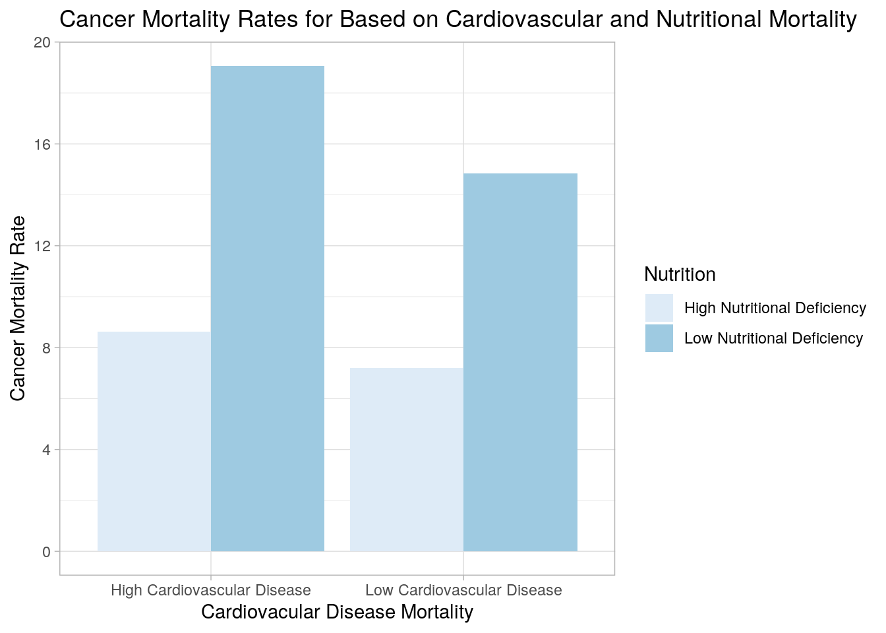

January 1, 0001
Selecting and Analyzing intial data sets
The two datasets analyzed in this project were the drinks data set found on fivethirtyeight and the global mortality dataset from the google spreadsheet given in the project instructions (https://docs.google.com/spreadsheets/d/1wZhPLMCHKJvwOkP4juclhjFgqIY8fQFMemwKL2c64vk/edit). The drinks dataset shows the data collected from a 2010 study of 193 different countries, showing the amount of beer, wine, spirits, and total alcohol consumed for each country. The mortality data set shows percentages of different types of mortality rates (such as those from cardiovascular disease or cancer) from the years 1990-2016 grouped by 223 different countries. I thought these would be interesting datasets to study in conjunction to see if various types of alcohol consumption can correlate to certain types of mortality rates. I also think the mortality rate dataset on its own is very interesting, as different types of mortality rates might correlate with each other. I expect those with more alcohol consumed to have higher rates of alcohol disorder realted deaths, and possibly more car accident deaths due to drunk driving. I also expect a negative correlation between cancer mortality rate and malnutrition rates, as cancer is more likely to be diagnosed in wealthier countries that struggle less with malnutrition.
install.packages("fivethirtyeightdata", repos = "https://fivethirtyeightdata.github.io/drat/",
type = "source")
library(fivethirtyeight)
library(fivethirtyeightdata)
library(ggplot2)
library(tidyverse)
library(dplyr)
library(readxl)
mortality <- read_excel("global_mortality.xlsx")
drinks <- drinks
glimpse(mortality)## Rows: 6,156
## Columns: 35
## $ country <chr> "Afghanistan", "Afghanista…
## $ country_code <chr> "AFG", "AFG", "AFG", "AFG"…
## $ year <dbl> 1990, 1991, 1992, 1993, 19…
## $ `Cardiovascular diseases (%)` <dbl> 17.61040, 17.80181, 18.386…
## $ `Cancers (%)` <dbl> 4.025975, 4.054145, 4.1739…
## $ `Respiratory diseases (%)` <dbl> 2.106626, 2.134176, 2.2082…
## $ `Diabetes (%)` <dbl> 3.832555, 3.822228, 3.9001…
## $ `Dementia (%)` <dbl> 0.5314287, 0.5324973, 0.54…
## $ `Lower respiratory infections (%)` <dbl> 10.886362, 10.356968, 10.0…
## $ `Neonatal deaths (%)` <dbl> 9.184653, 8.938897, 8.8413…
## $ `Diarrheal diseases (%)` <dbl> 2.497141, 2.572228, 2.7077…
## $ `Road accidents (%)` <dbl> 3.715944, 3.729142, 3.8163…
## $ `Liver disease (%)` <dbl> 0.8369093, 0.8455159, 0.87…
## $ `Tuberculosis (%)` <dbl> 5.877075, 5.891704, 6.0346…
## $ `Kidney disease (%)` <dbl> 1.680611, 1.671115, 1.7009…
## $ `Digestive diseases (%)` <dbl> 1.058771, 1.049322, 1.0628…
## $ `HIV/AIDS (%)` <dbl> 0.01301948, 0.01451458, 0.…
## $ `Suicide (%)` <dbl> 0.4366105, 0.4422802, 0.45…
## $ `Malaria (%)` <dbl> 0.4488863, 0.4550191, 0.46…
## $ `Homicide (%)` <dbl> 1.287020, 1.290991, 1.3261…
## $ `Nutritional deficiencies (%)` <dbl> 0.3505045, 0.3432123, 0.34…
## $ `Meningitis (%)` <dbl> 3.037603, 2.903202, 2.8406…
## $ `Protein-energy malnutrition (%)` <dbl> 0.3297599, 0.3221711, 0.32…
## $ `Drowning (%)` <dbl> 0.9838624, 0.9545860, 0.95…
## $ `Maternal deaths (%)` <dbl> 1.769213, 1.749264, 1.7642…
## $ `Parkinson disease (%)` <dbl> 0.02515859, 0.02545063, 0.…
## $ `Alcohol disorders (%)` <dbl> 0.02899828, 0.02917152, 0.…
## $ `Intestinal infectious diseases (%)` <dbl> 0.1833303, 0.1781074, 0.17…
## $ `Drug disorders (%)` <dbl> 0.04120540, 0.04203340, 0.…
## $ `Hepatitis (%)` <dbl> 0.1387378, 0.1350081, 0.13…
## $ `Fire (%)` <dbl> 0.1741567, 0.1706712, 0.17…
## $ `Heat-related (hot and cold exposure) (%)` <dbl> 0.1378229, 0.1348266, 0.13…
## $ `Natural disasters (%)` <dbl> 0.00000000, 0.79760256, 0.…
## $ `Conflict (%)` <dbl> 0.932, 2.044, 2.408, NA, 4…
## $ `Terrorism (%)` <dbl> 0.007, 0.040, 0.027, NA, 0…glimpse(drinks)## Rows: 193
## Columns: 5
## $ country <chr> "Afghanistan", "Albania", "Algeria", "An…
## $ beer_servings <int> 0, 89, 25, 245, 217, 102, 193, 21, 261, …
## $ spirit_servings <int> 0, 132, 0, 138, 57, 128, 25, 179, 72, 75…
## $ wine_servings <int> 0, 54, 14, 312, 45, 45, 221, 11, 212, 19…
## $ total_litres_of_pure_alcohol <dbl> 0.0, 4.9, 0.7, 12.4, 5.9, 4.9, 8.3, 3.8,…Selecting only 2010
Because the drinks dataset was made using data from 2010, the mortality dataset needed to be filtered to 2010 observations only to minimize bias. Therefore, all conclusions from the data throughout this project is only accurate for the year 2010.
mortalitytid <- mortality %>% filter(year == 2010)Untidying and Tidying Drinks
Here, the mortality dataset was pivoted longer for every variable that contained a %, which would make each numeric variable shift to a column named name and the value for that numeric variable to value. This is easily undone to retidy data by pivoting the names back to individual columns and values back to their original positions.
untid <- mortalitytid %>% pivot_longer(contains("%"))
head(untid)## # A tibble: 6 x 5
## country country_code year name value
## <chr> <chr> <dbl> <chr> <dbl>
## 1 Afghanistan AFG 2010 Cardiovascular diseases (%) 25.6
## 2 Afghanistan AFG 2010 Cancers (%) 5.98
## 3 Afghanistan AFG 2010 Respiratory diseases (%) 3.14
## 4 Afghanistan AFG 2010 Diabetes (%) 5.93
## 5 Afghanistan AFG 2010 Dementia (%) 0.848
## 6 Afghanistan AFG 2010 Lower respiratory infections (%) 6.45untid %>% pivot_wider(names_from = "name", values_from = "value") %>%
head()## # A tibble: 6 x 35
## country country_code year `Cardiovascular… `Cancers (%)` `Respiratory di…
## <chr> <chr> <dbl> <dbl> <dbl> <dbl>
## 1 Afghan… AFG 2010 25.6 5.98 3.14
## 2 Albania ALB 2010 58.4 19.1 3.33
## 3 Algeria DZA 2010 37.1 10.2 3.25
## 4 Americ… ASM 2010 28.5 16.2 5.05
## 5 Andean… <NA> 2010 20.2 17.4 4.52
## 6 Andorra AND 2010 32.5 28.0 5.58
## # … with 29 more variables: `Diabetes (%)` <dbl>, `Dementia (%)` <dbl>, `Lower
## # respiratory infections (%)` <dbl>, `Neonatal deaths (%)` <dbl>, `Diarrheal
## # diseases (%)` <dbl>, `Road accidents (%)` <dbl>, `Liver disease (%)` <dbl>,
## # `Tuberculosis (%)` <dbl>, `Kidney disease (%)` <dbl>, `Digestive diseases
## # (%)` <dbl>, `HIV/AIDS (%)` <dbl>, `Suicide (%)` <dbl>, `Malaria (%)` <dbl>,
## # `Homicide (%)` <dbl>, `Nutritional deficiencies (%)` <dbl>, `Meningitis
## # (%)` <dbl>, `Protein-energy malnutrition (%)` <dbl>, `Drowning (%)` <dbl>,
## # `Maternal deaths (%)` <dbl>, `Parkinson disease (%)` <dbl>, `Alcohol
## # disorders (%)` <dbl>, `Intestinal infectious diseases (%)` <dbl>, `Drug
## # disorders (%)` <dbl>, `Hepatitis (%)` <dbl>, `Fire (%)` <dbl>,
## # `Heat-related (hot and cold exposure) (%)` <dbl>, `Natural disasters
## # (%)` <dbl>, `Conflict (%)` <dbl>, `Terrorism (%)` <dbl>Inner join
I chose an inner join for the data, which will exclude any country not appearing in both datasets (inside of venn diagram). This choice was determined as countries not appearing in both would result in a lot of NA's and not allow for the analysis of mortality rates based upon drinks data. I used the tidy mortality data with only 2010 observations and the base drinks data in the join.
fulldata <- mortalitytid %>% inner_join(drinks)
head(fulldata)## # A tibble: 6 x 39
## country country_code year `Cardiovascular… `Cancers (%)` `Respiratory di…
## <chr> <chr> <dbl> <dbl> <dbl> <dbl>
## 1 Afghan… AFG 2010 25.6 5.98 3.14
## 2 Albania ALB 2010 58.4 19.1 3.33
## 3 Algeria DZA 2010 37.1 10.2 3.25
## 4 Andorra AND 2010 32.5 28.0 5.58
## 5 Angola AGO 2010 10.7 5.01 1.67
## 6 Argent… ARG 2010 34.1 21.5 6.20
## # … with 33 more variables: `Diabetes (%)` <dbl>, `Dementia (%)` <dbl>, `Lower
## # respiratory infections (%)` <dbl>, `Neonatal deaths (%)` <dbl>, `Diarrheal
## # diseases (%)` <dbl>, `Road accidents (%)` <dbl>, `Liver disease (%)` <dbl>,
## # `Tuberculosis (%)` <dbl>, `Kidney disease (%)` <dbl>, `Digestive diseases
## # (%)` <dbl>, `HIV/AIDS (%)` <dbl>, `Suicide (%)` <dbl>, `Malaria (%)` <dbl>,
## # `Homicide (%)` <dbl>, `Nutritional deficiencies (%)` <dbl>, `Meningitis
## # (%)` <dbl>, `Protein-energy malnutrition (%)` <dbl>, `Drowning (%)` <dbl>,
## # `Maternal deaths (%)` <dbl>, `Parkinson disease (%)` <dbl>, `Alcohol
## # disorders (%)` <dbl>, `Intestinal infectious diseases (%)` <dbl>, `Drug
## # disorders (%)` <dbl>, `Hepatitis (%)` <dbl>, `Fire (%)` <dbl>,
## # `Heat-related (hot and cold exposure) (%)` <dbl>, `Natural disasters
## # (%)` <dbl>, `Conflict (%)` <dbl>, `Terrorism (%)` <dbl>,
## # beer_servings <int>, spirit_servings <int>, wine_servings <int>,
## # total_litres_of_pure_alcohol <dbl>Summary Statistics
Summary statistics were first calculated by averaging the results from all countries. Cardiovasular disease had the highest mortality rate by a significant margin. Also, there was large standard deviations in the average mortality rates, showing that they vary a lot between countries. The min and max statistics highlight this too, as the min and max for each variable are typically very distant from each other. Lastly, there were some countries with a minimum of 0 liters alcohol consumed, which makes sense as in some countries alcohol is illegal. The standard deviation for drinks was even larger, often as large as the actual value for the specific amount of alcohol consumed. Then, to ensure year wasn't counted as numeric, it was shifted into a character. Then, countries with alcohol disorders greater than 1% of deaths was filtered, which provided some interesting results. This showed three countries, El Salvador, Mongolia, and Guatemala, having the highest percentage of alcohol disorders, but far from the most alcohol consumed. For example Finland consumes close to five times the alcohol of El Salvador, but only 60% the alcohol disorders that El Salvador does based of percentage mortality. Next, a new categorical variable showing called nutrition was created, where high designates countries with nutritional deficiency mortality above the mean, and low designates countries with nutritional deficency mortality below the mean. A similar variable was created, except the next one was related to cardiovascular disease mortality rates. The nutritional deficiency categorical variable showed many interesting relationships, but the most significant was that those with low nutrition deficiency had a majority of deaths from cardiovasular disease or cancer, while mortality rate was much more spread out in those with high nutritional deficiency.
# Summary statistics averaged across all countries
fulldata %>% group_by(year) %>% na.omit() %>% summarize_if(is.numeric,
list(ddmean = mean, ddsd = sd, ddvar = var, ddmin = min,
ddmax = max, ddndistinct = n_distinct)) %>% pivot_longer(-1) %>%
separate(name, into = c("var", "stat"), sep = "dd") %>% pivot_wider(names_from = "var",
values_from = "value") %>% head()## # A tibble: 6 x 38
## year stat `Cardiovascular… `Cancers (%)_` `Respiratory di… `Diabetes (%)_`
## <dbl> <chr> <dbl> <dbl> <dbl> <dbl>
## 1 2010 mean 29.8 15.1 3.93 6.65
## 2 2010 sd 14.2 8.56 2.29 4.51
## 3 2010 var 202. 73.2 5.24 20.3
## 4 2010 min 5.30 3.03 0.784 1.09
## 5 2010 max 64.8 33.3 13.4 29.9
## 6 2010 ndis… 165 165 165 165
## # … with 32 more variables: `Dementia (%)_` <dbl>, `Lower respiratory
## # infections (%)_` <dbl>, `Neonatal deaths (%)_` <dbl>, `Diarrheal diseases
## # (%)_` <dbl>, `Road accidents (%)_` <dbl>, `Liver disease (%)_` <dbl>,
## # `Tuberculosis (%)_` <dbl>, `Kidney disease (%)_` <dbl>, `Digestive diseases
## # (%)_` <dbl>, `HIV/AIDS (%)_` <dbl>, `Suicide (%)_` <dbl>, `Malaria
## # (%)_` <dbl>, `Homicide (%)_` <dbl>, `Nutritional deficiencies (%)_` <dbl>,
## # `Meningitis (%)_` <dbl>, `Protein-energy malnutrition (%)_` <dbl>,
## # `Drowning (%)_` <dbl>, `Maternal deaths (%)_` <dbl>, `Parkinson disease
## # (%)_` <dbl>, `Alcohol disorders (%)_` <dbl>, `Intestinal infectious
## # diseases (%)_` <dbl>, `Drug disorders (%)_` <dbl>, `Hepatitis (%)_` <dbl>,
## # `Fire (%)_` <dbl>, `Heat-related (hot and cold exposure) (%)_` <dbl>,
## # `Natural disasters (%)_` <dbl>, `Conflict (%)_` <dbl>, `Terrorism
## # (%)_` <dbl>, beer_servings_ <dbl>, spirit_servings_ <dbl>,
## # wine_servings_ <dbl>, total_litres_of_pure_alcohol_ <dbl># year as a character
fulldata <- fulldata %>% mutate(year = as.character(year))
# Filters to high alcohol disorder mortality rate
fulldata %>% filter(`Alcohol disorders (%)` > 1) %>% select(country,
`Alcohol disorders (%)`, total_litres_of_pure_alcohol, beer_servings,
wine_servings, spirit_servings) %>% arrange(desc(`Alcohol disorders (%)`)) %>%
head()## # A tibble: 6 x 6
## country `Alcohol disord… total_litres_of… beer_servings wine_servings
## <chr> <dbl> <dbl> <int> <int>
## 1 El Sal… 2.39 2.2 52 2
## 2 Mongol… 2.22 4.9 77 8
## 3 Guatem… 1.75 2.2 53 2
## 4 Estonia 1.67 9.5 224 59
## 5 Denmark 1.47 10.4 224 278
## 6 Finland 1.34 10 263 97
## # … with 1 more variable: spirit_servings <int># Groupby high nutritional deficieny
fulldatamut <- fulldata %>% mutate(Nutrition = ifelse(`Nutritional deficiencies (%)` >
mean(`Nutritional deficiencies (%)`), "High Nutritional Deficiency",
"Low Nutritional Deficiency"))
# Groupby high Cardiovascular disease
Graph3 <- fulldatamut %>% mutate(Cardio = ifelse(`Cardiovascular diseases (%)` >
mean(`Cardiovascular diseases (%)`), "High Cardiovascular Disease",
"Low Cardiovascular Disease"))
# summary stats grouped by nutritional deficiency ranking
fulldatamut %>% select(-year) %>% group_by(Nutrition) %>% summarize_if(is.numeric,
list(ddmean = mean, ddsd = sd, ddmin = min, ddmax = max)) %>%
head()## # A tibble: 2 x 145
## Nutrition `Cardiovascular… `Cancers (%)_dd… `Respiratory di… `Diabetes (%)_d…
## <chr> <dbl> <dbl> <dbl> <dbl>
## 1 High Nut… 14.1 7.25 2.42 4.80
## 2 Low Nutr… 35.5 17.8 4.48 7.74
## # … with 140 more variables: `Dementia (%)_ddmean` <dbl>, `Lower respiratory
## # infections (%)_ddmean` <dbl>, `Neonatal deaths (%)_ddmean` <dbl>,
## # `Diarrheal diseases (%)_ddmean` <dbl>, `Road accidents (%)_ddmean` <dbl>,
## # `Liver disease (%)_ddmean` <dbl>, `Tuberculosis (%)_ddmean` <dbl>, `Kidney
## # disease (%)_ddmean` <dbl>, `Digestive diseases (%)_ddmean` <dbl>, `HIV/AIDS
## # (%)_ddmean` <dbl>, `Suicide (%)_ddmean` <dbl>, `Malaria (%)_ddmean` <dbl>,
## # `Homicide (%)_ddmean` <dbl>, `Nutritional deficiencies (%)_ddmean` <dbl>,
## # `Meningitis (%)_ddmean` <dbl>, `Protein-energy malnutrition
## # (%)_ddmean` <dbl>, `Drowning (%)_ddmean` <dbl>, `Maternal deaths
## # (%)_ddmean` <dbl>, `Parkinson disease (%)_ddmean` <dbl>, `Alcohol disorders
## # (%)_ddmean` <dbl>, `Intestinal infectious diseases (%)_ddmean` <dbl>, `Drug
## # disorders (%)_ddmean` <dbl>, `Hepatitis (%)_ddmean` <dbl>, `Fire
## # (%)_ddmean` <dbl>, `Heat-related (hot and cold exposure) (%)_ddmean` <dbl>,
## # `Natural disasters (%)_ddmean` <dbl>, `Conflict (%)_ddmean` <dbl>,
## # `Terrorism (%)_ddmean` <dbl>, beer_servings_ddmean <dbl>,
## # spirit_servings_ddmean <dbl>, wine_servings_ddmean <dbl>,
## # total_litres_of_pure_alcohol_ddmean <dbl>, `Cardiovascular diseases
## # (%)_ddsd` <dbl>, `Cancers (%)_ddsd` <dbl>, `Respiratory diseases
## # (%)_ddsd` <dbl>, `Diabetes (%)_ddsd` <dbl>, `Dementia (%)_ddsd` <dbl>,
## # `Lower respiratory infections (%)_ddsd` <dbl>, `Neonatal deaths
## # (%)_ddsd` <dbl>, `Diarrheal diseases (%)_ddsd` <dbl>, `Road accidents
## # (%)_ddsd` <dbl>, `Liver disease (%)_ddsd` <dbl>, `Tuberculosis
## # (%)_ddsd` <dbl>, `Kidney disease (%)_ddsd` <dbl>, `Digestive diseases
## # (%)_ddsd` <dbl>, `HIV/AIDS (%)_ddsd` <dbl>, `Suicide (%)_ddsd` <dbl>,
## # `Malaria (%)_ddsd` <dbl>, `Homicide (%)_ddsd` <dbl>, `Nutritional
## # deficiencies (%)_ddsd` <dbl>, `Meningitis (%)_ddsd` <dbl>, `Protein-energy
## # malnutrition (%)_ddsd` <dbl>, `Drowning (%)_ddsd` <dbl>, `Maternal deaths
## # (%)_ddsd` <dbl>, `Parkinson disease (%)_ddsd` <dbl>, `Alcohol disorders
## # (%)_ddsd` <dbl>, `Intestinal infectious diseases (%)_ddsd` <dbl>, `Drug
## # disorders (%)_ddsd` <dbl>, `Hepatitis (%)_ddsd` <dbl>, `Fire
## # (%)_ddsd` <dbl>, `Heat-related (hot and cold exposure) (%)_ddsd` <dbl>,
## # `Natural disasters (%)_ddsd` <dbl>, `Conflict (%)_ddsd` <dbl>, `Terrorism
## # (%)_ddsd` <dbl>, beer_servings_ddsd <dbl>, spirit_servings_ddsd <dbl>,
## # wine_servings_ddsd <dbl>, total_litres_of_pure_alcohol_ddsd <dbl>,
## # `Cardiovascular diseases (%)_ddmin` <dbl>, `Cancers (%)_ddmin` <dbl>,
## # `Respiratory diseases (%)_ddmin` <dbl>, `Diabetes (%)_ddmin` <dbl>,
## # `Dementia (%)_ddmin` <dbl>, `Lower respiratory infections (%)_ddmin` <dbl>,
## # `Neonatal deaths (%)_ddmin` <dbl>, `Diarrheal diseases (%)_ddmin` <dbl>,
## # `Road accidents (%)_ddmin` <dbl>, `Liver disease (%)_ddmin` <dbl>,
## # `Tuberculosis (%)_ddmin` <dbl>, `Kidney disease (%)_ddmin` <dbl>,
## # `Digestive diseases (%)_ddmin` <dbl>, `HIV/AIDS (%)_ddmin` <dbl>, `Suicide
## # (%)_ddmin` <dbl>, `Malaria (%)_ddmin` <dbl>, `Homicide (%)_ddmin` <dbl>,
## # `Nutritional deficiencies (%)_ddmin` <dbl>, `Meningitis (%)_ddmin` <dbl>,
## # `Protein-energy malnutrition (%)_ddmin` <dbl>, `Drowning (%)_ddmin` <dbl>,
## # `Maternal deaths (%)_ddmin` <dbl>, `Parkinson disease (%)_ddmin` <dbl>,
## # `Alcohol disorders (%)_ddmin` <dbl>, `Intestinal infectious diseases
## # (%)_ddmin` <dbl>, `Drug disorders (%)_ddmin` <dbl>, `Hepatitis
## # (%)_ddmin` <dbl>, `Fire (%)_ddmin` <dbl>, `Heat-related (hot and cold
## # exposure) (%)_ddmin` <dbl>, `Natural disasters (%)_ddmin` <dbl>, `Conflict
## # (%)_ddmin` <dbl>, `Terrorism (%)_ddmin` <dbl>, …Correlation heatmap for all numeric variables
Here, a correlations matrix is set up in the first part of the code. Then, the highest and lowest correlations not equalling one were arranged to quickly see which variables correlate significantly. Finally, a correlation heatmap was created, with blue being a negative correlation and red being a positive correlation, and white being no correlation. When analyzing the correlations, nutritional deficiency and protein-energy malnutrition mortality rates had a correlation close to 1, which makes logical sense. Also, cancer and parkinsons had a high correlation, which could be due to countries able to diagnose one of those diseases might also have the capability to diagnose the other. Cancer and neonatal deaths are highly negatively correlated, which could be because neonatal deaths can be prevented in advanced medicalized countries, and those countries also have citizens who live longer, resulting in them dying from cancer as opposed to another preventable disease. The graph shows the various variables' correlations. Some of these are trivial correlations, such as beer servings correlated with average alcohol intake. Others, such as dementia and maternal deaths having strong negative correlations, prove interesting subjects to consider. There are far too many correlations to comment on within the scope of this project, but the heatmap is an effective visualizaiton to ensure meaningful correlations are not completely ignored.
# set up correlation
fulldatacor <- fulldata %>% na.omit %>% select_if(is.numeric) %>%
cor() %>% as.data.frame %>% rownames_to_column("var1") %>%
pivot_longer(-1, names_to = "var2", values_to = "correlation")
fulldatacor %>% head()## # A tibble: 6 x 3
## var1 var2 correlation
## <chr> <chr> <dbl>
## 1 Cardiovascular diseases (%) Cardiovascular diseases (%) 1
## 2 Cardiovascular diseases (%) Cancers (%) 0.496
## 3 Cardiovascular diseases (%) Respiratory diseases (%) 0.216
## 4 Cardiovascular diseases (%) Diabetes (%) 0.0527
## 5 Cardiovascular diseases (%) Dementia (%) 0.347
## 6 Cardiovascular diseases (%) Lower respiratory infections (%) -0.686# checking the highest and lowest non identical correlatinos
fulldatacor %>% filter(correlation != 1) %>% arrange(desc(correlation)) %>%
head()## # A tibble: 6 x 3
## var1 var2 correlation
## <chr> <chr> <dbl>
## 1 Nutritional deficiencies (%) Protein-energy malnutrition (%) 0.999
## 2 Protein-energy malnutrition (%) Nutritional deficiencies (%) 0.999
## 3 Cancers (%) Parkinson disease (%) 0.907
## 4 Parkinson disease (%) Cancers (%) 0.907
## 5 Meningitis (%) Maternal deaths (%) 0.876
## 6 Maternal deaths (%) Meningitis (%) 0.876fulldatacor %>% filter(correlation != -1) %>% arrange(correlation) %>%
head()## # A tibble: 6 x 3
## var1 var2 correlation
## <chr> <chr> <dbl>
## 1 Cancers (%) Neonatal deaths (%) -0.786
## 2 Neonatal deaths (%) Cancers (%) -0.786
## 3 Neonatal deaths (%) Parkinson disease (%) -0.738
## 4 Parkinson disease (%) Neonatal deaths (%) -0.738
## 5 Cancers (%) Maternal deaths (%) -0.694
## 6 Maternal deaths (%) Cancers (%) -0.694fulldatacor %>% ggplot(aes(var1, var2, fill = correlation)) +
geom_tile() + scale_fill_gradient2(low = "blue", mid = "white",
high = "red") + theme(axis.text.x = element_text(angle = 90,
hjust = 1)) + xlab("Variable 1") + ylab("Variable 2") + ggtitle("Correlations Plot") +
theme(plot.title = element_text(hjust = 0.5)) + theme(legend.position = "right")
Total alcohol, alcohol disorders, and road accidents
While it might seem straightforward that alcohol consumption and alcohol disorder mortality percentages would be positively correlated, the plot shows a different picture. While there is a positive correlation, there are plenty of outliers from the line of best fit. This leads to the conclusion that while countries that consume more alcohol generally have more alcohol disorder mortality, it is certainly not a causation. Many countries have high consumption and low mortality or low consumption and high mortality from alcohol disorders. A guess as to why that could happen is that some wealthy countries might consume a lot of alcohol, but have better medical care than other countries to sustain such behavior, and countries with high alcohol disorder mortality rates might have poor healthcare systems. Also, while I expected road accidents might increase given more alcohol consumed due to drunk driving, that was not the case. In fact, it appears that the only cluster with high road accidents have low rates of alcohol consumption, however overall there is very little indication of a significant relationship between the two variables.
fulldata %>% ggplot(aes(x = total_litres_of_pure_alcohol, y = `Alcohol disorders (%)`,
color = `Road accidents (%)`)) + geom_point() + geom_smooth(method = "lm",
color = "red") + xlab("Total Liters Alcohol Consumed") +
ylab("Mortality Rate from Alcohol Disorders (%)") + labs(title = "Alcohol Consumed Correlates to Higher Alcohol Disorder Mortality Rate") +
scale_x_continuous(breaks = seq(0, 15, 2.5)) + geom_jitter() +
theme_bw()Cardiovascular Disease, Cancer, and Malnutrition
In this plot, the cancer mortality rate is plotted against two separate variable. One is Nutrition, which can either have higher than mean or lower than mean nutrititional defieciency mortality rate. The other variable is Cardio which can either have higher or lower than the mean cardiovascular disease mortality rate. Combined this provides the four separate cases shown in the graph. The main observation drawn from this table is that low nutritional deficiency countries have much higher average cancer mortality rates. One might hypothesize that countries with better healthcare or more wealth would have less nutritional deficiencies combined with longer life expectancy and therefore more likely to diagnose cancer. The relationship between cardiovascular disease and cancer mortality appears to be a positive correlation. This could be explained similarly to the relationship between nutritional deficiency and cancer, where countries with longer life expectancy would be expected to have both higher cancer and higher cardiovascular mortality rates.
Graph3 %>% ggplot(aes(x = Cardio, y = `Cancers (%)`, fill = Nutrition)) +
geom_bar(stat = "summary", fun = mean, position = "dodge") +
labs(title = "Cancer Mortality Rates for Based on Cardiovascular and Nutritional Mortality",
x = "Cardiovacular Disease Mortality", y = "Cancer Mortality Rate") +
theme_light() + scale_y_continuous(breaks = seq(0, 20, 4)) +
scale_fill_brewer()
kmeans/clustering
Initially, I selected variables used thus far for the two graphs to provide an easier visual (as opposed to showing all 30+ variables). Then, the silhouette graph was used to find the number of clusters for the data, which was determined to be 3, because it was the highest point on the graph. Finally, a PAM cluster analysis was run and a visualization was formed of all the variable. The main observation drawn from this is that the red cluster does not appear to be very different from green and blue, it just lies in between them but could be split into either one. Conversely, the blue and green clusters are quite distinct. The blue cluster is low in alcohol consumption, cardiovascular and cancer mortality rates. The green has high cardiovasular disease and low nutritional deficiency. Overall, the green and blue clusters match what has been discussed throughout the project, and the red cluster are those which don't fall into either category. The green cluster characterizes countries that are hypthesized to be wealthy with high life expectancies, and the blue cluster would be hypothesized to be the countries that are poorer with low life expectancy (again this is just a hypothesis and way to describe the cluster, no data on life expectancies or economic status was analyzed).
# only select variables used thus far
fulldataclust <- Graph3 %>% select(`Road accidents (%)`, `Cancers (%)`,
total_litres_of_pure_alcohol, `Alcohol disorders (%)`, Nutrition,
Cardio)
library(cluster)
gower1 <- fulldataclust %>% mutate_if(is.character, as.factor) %>%
daisy(metric = "gower")
dat2 <- fulldataclust %>% mutate_if(is.character, as.factor)
# silhouette
sil_width <- vector()
for (i in 2:10) {
pam_fit <- pam(gower1, diss = TRUE, k = i)
sil_width[i] <- pam_fit$silinfo$avg.width
}
ggplot() + geom_line(aes(x = 1:10, y = sil_width)) + scale_x_continuous(name = "k",
breaks = 1:10)pam1 <- pam(gower1, k = 3, diss = T)
pam1## Medoids:
## ID
## [1,] 27 27
## [2,] 108 108
## [3,] 61 61
## Clustering vector:
## [1] 1 2 2 2 3 2 2 2 2 2 2 1 3 1 2 2 1 3 1 3 1 1 1 2 3 3 1 3 2 3 3 1 2 1 3 3 1
## [38] 3 2 2 2 2 1 3 2 2 3 2 1 3 3 2 3 2 2 1 3 3 2 2 3 2 2 3 3 3 2 1 1 2 2 1 3 2
## [75] 2 2 1 2 2 1 2 2 3 3 2 2 1 2 2 1 3 2 2 2 2 3 3 2 2 3
## [ reached getOption("max.print") -- omitted 73 entries ]
## Objective function:
## build swap
## 0.10317680 0.09573595
##
## Available components:
## [1] "medoids" "id.med" "clustering" "objective" "isolation"
## [6] "clusinfo" "silinfo" "diss" "call"# Plotting
library(GGally)
ggpairs(dat2, columns = 1:6, aes(color = as.factor(pam1$clustering)))In conclusion, this project really opened my eyes to data analysis and its usefulness. It was really interesting to create novel graphs, correlations, and really explore data in this format with creative freedom. Looking back on this project, if there was one thing I wish I could add it would be some sort of economic ranking for each country, and maybe geographic groups based off continent. Both of these would open up the data to multitudes of new analysis possibilities, and give my hypotheses about economic causation throughout this project more merit.